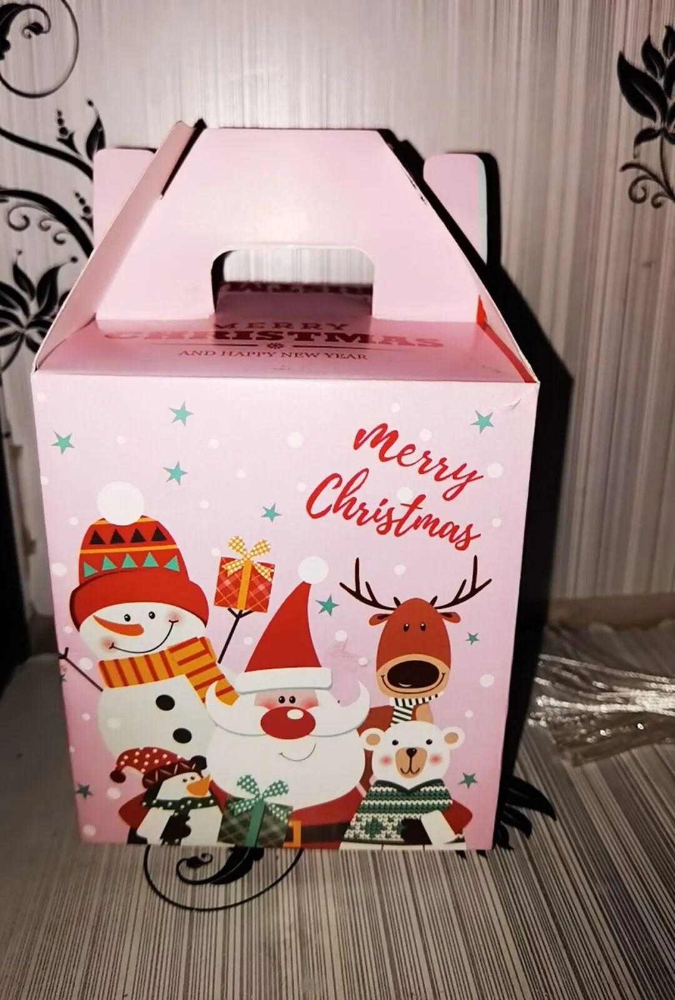
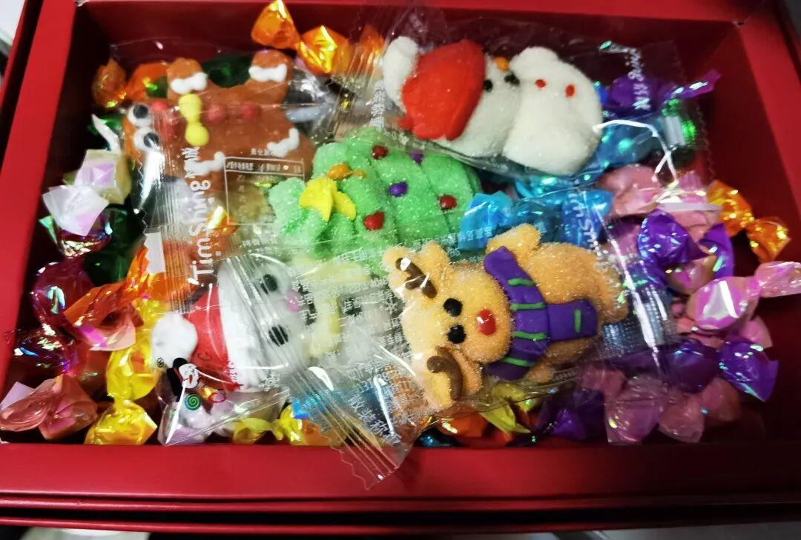
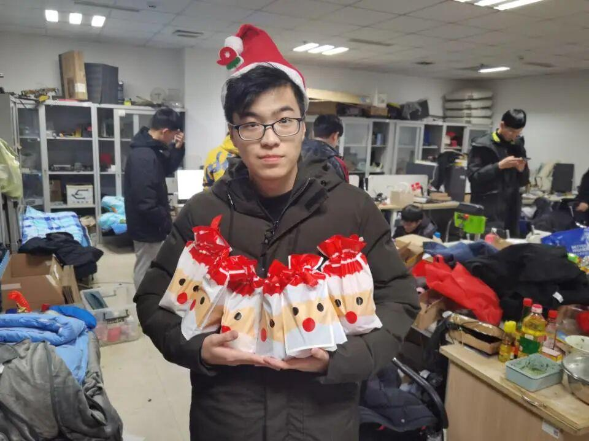
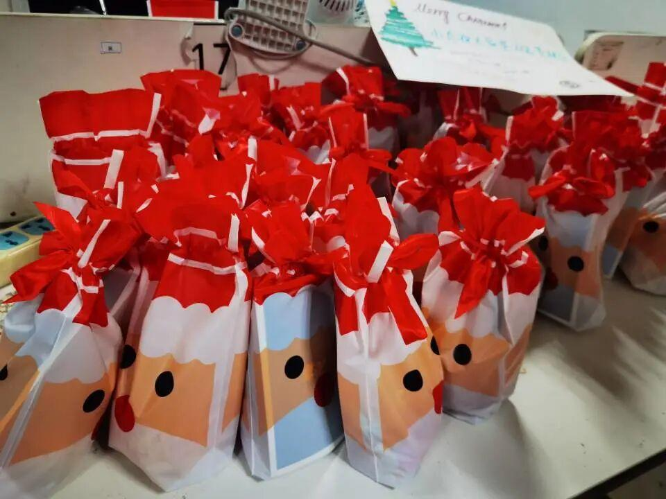
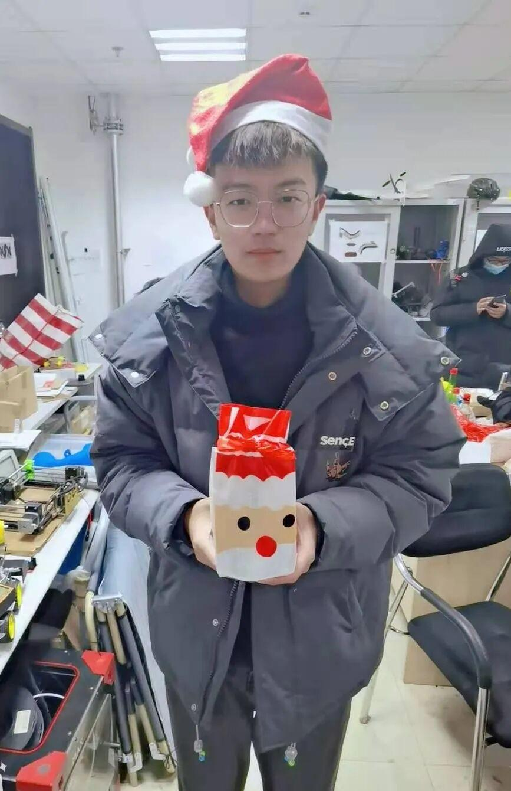
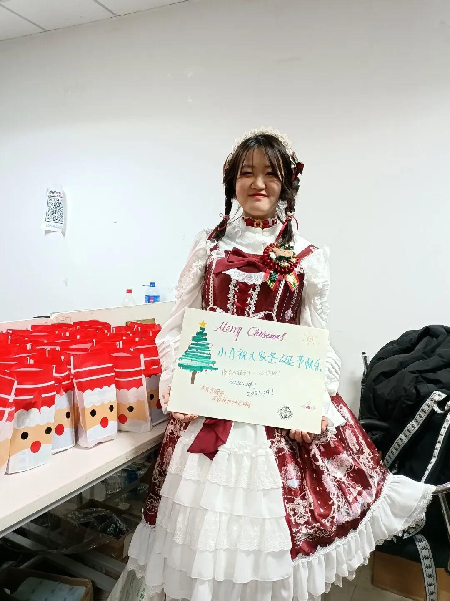

使用小程序
2
0
2
0
圣诞节快乐
———Merry Christmas.
一年一度的圣诞节已经来了
小伙伴们有没有做好准备快乐的度过它呢？
圣诞节就快到了，有收到圣诞老人的礼物吗？伴随着雪花飞舞，圣诞节也悄悄逼近，五彩斑斓的灯光，欢快的笑声点缀着严寒。漫天的雪花飞舞，沈理电协陪你一起度过这个冬天。
一起吃个苹果如何？

什么，不想吃苹果？
没关系，还有我们准备的圣诞糖果。

不知道各位有收到心仪的贺卡了吗？
所有温暖的祝福当然会在贺卡中啦！
″圣诞小帅″派发礼物！

圣诞节要有应有的礼物，
圣诞老人会照顾到每个人的！

不但如此
这里
还有帅气的小哥哥！

也有可爱的小姐姐！

每年的圣诞节是一个美好的节日，
但是今年是不平凡的一年，
疫情正向我们袭来，
不如让我们一起
一起共度难关，
快乐的度过这不平凡的圣诞！
祝大家圣诞节快乐！
让我们一起看看电协的快乐圣诞吧
排版：刘洪溥
图片：信息部